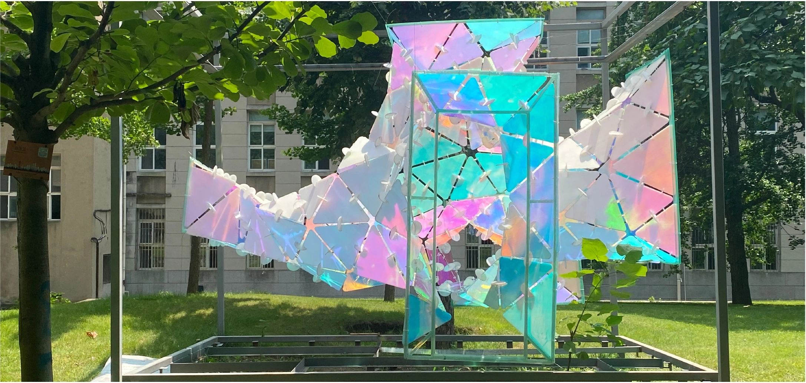
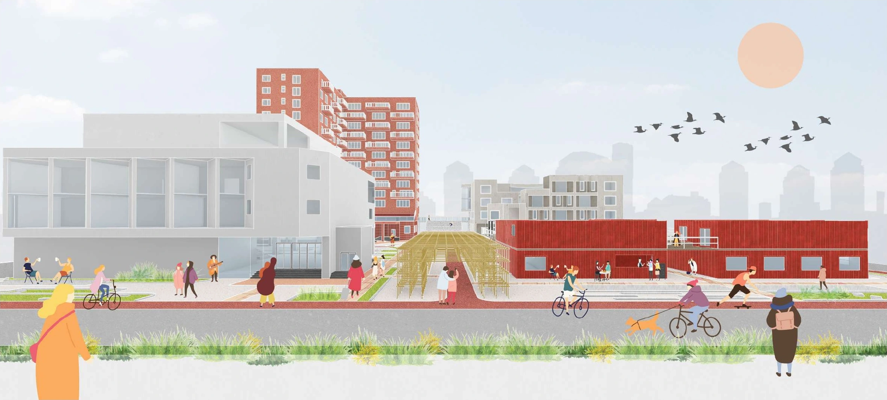

01Explore project
The Dual Reality of Topological Performance
A comparative study of topology, structural efficiency, and fabrication in free-form shells.
Exploring architecture through computational systems, structural logic, and spatial design.
A comparative study of topology, structural efficiency, and fabrication in free-form shells.

Housing and vertical planting modules developed through environmental optimisation in a dense urban context.

A user-driven procedural system balancing coherence, variation, and control in urban form.

An agent-based system in which branching structural forms emerge from simple local behaviours.

Computational form-finding translated into an interlocking installation of reflective panels.

A music community connecting performance, practice, living, and public space through a nine-square grid.

A museum proposal exploring historical continuity and the emotional memory of space.

A commercial district renewal connecting cultural memory with contemporary public life.